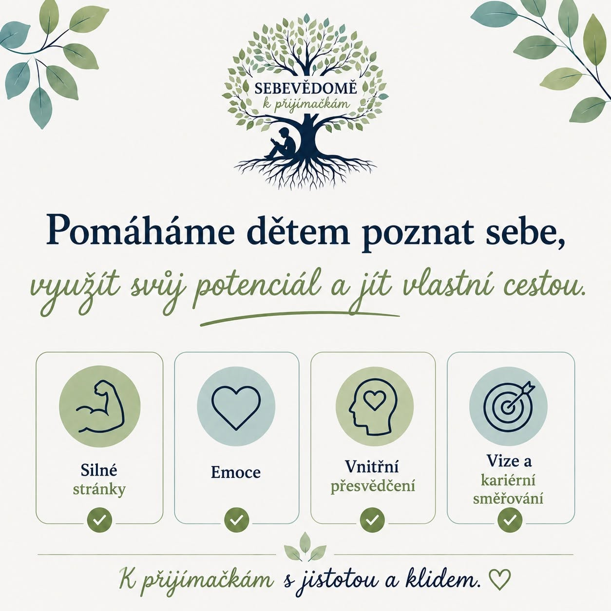

← Zpět na blog
24. června 2026
Jak zvládnout stres před zkouškami

Přijímací zkoušky nejsou jen o znalostech. Velkou roli hraje i to, jak se s tou situací dítě psychicky vyrovná. Klid a jistota se přitom dají trénovat stejně jako matematika nebo čeština.
Nervozita je normální
Prvním krokem je přiznat si, že mít z důležité zkoušky trochu obavy je naprosto v pořádku. Cílem není nervozitu úplně odstranit, ale naučit se s ní pracovat tak, aby dítěti nebránila podat svůj nejlepší výkon.
Co doma reálně pomáhá
- Nacvičit „ostrou“ situaci předem. Cvičný test na čas, v podobných podmínkách jako u skutečné zkoušky, vezme části nejistoty tím, že dítě přesně ví, co ho čeká.
- Mluvit o obavách nahlas. Když dítě obavy vysloví, přestávají být tak velké. Pomáhá i to, když rodič sdílí, že mít strach z důležité zkoušky je běžné.
- Dbát na spánek a režim. Únava zvyšuje úzkost a snižuje schopnost soustředit se – poslední týdny před zkouškou nejsou čas na přespávání do noci s učením.
- Zaměřit se na proces, ne jen na výsledek. Ocenění za snahu a zlepšení – nejen za jedničky – dítěti ukazuje, že jeho hodnota nestojí na jednom čísle.
- Jít příkladem klidu. Děti citlivě vnímají napětí rodičů. Klidný, věcný přístup doma se přenáší i na ně.
Sebevědomí jako součást přípravy
V programu Sebevědomě k přijímačkám proto nepracujeme jen s češtinou a matematikou, ale i s tím, aby dítě poznalo své silné stránky a věřilo si. Kombinace znalostí a klidu je to, co u zkoušky nejvíc pomáhá.
Chcete, aby vaše dítě šlo k přijímačkám s klidem?
Přihlásit dítě